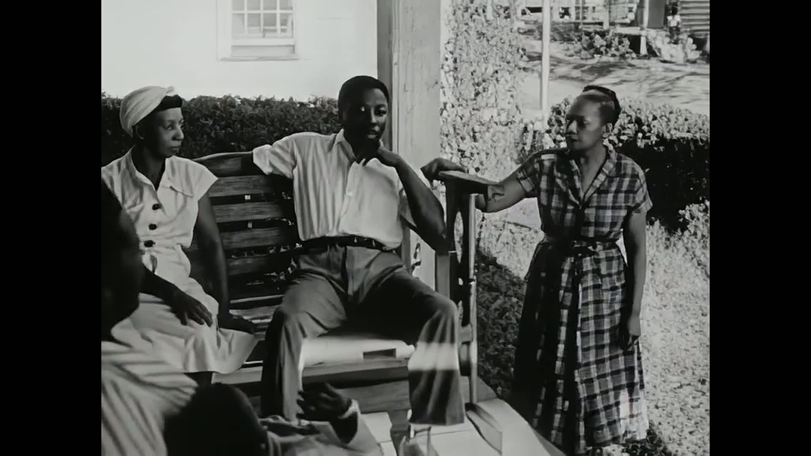
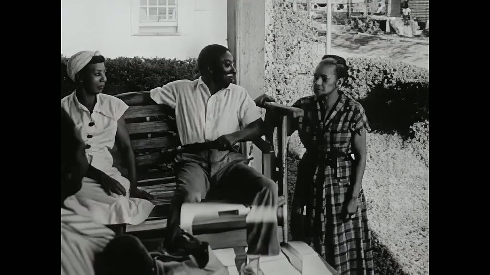
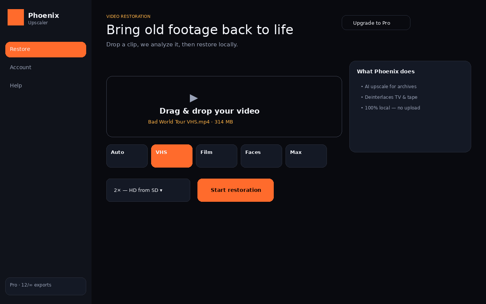
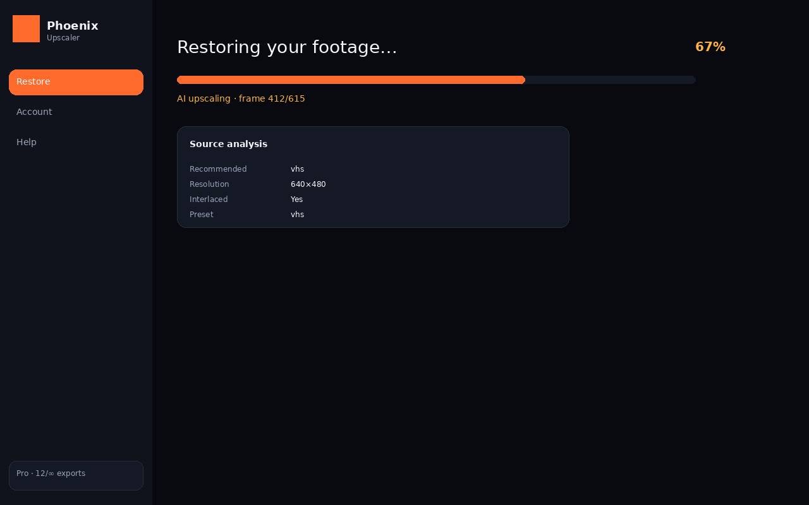
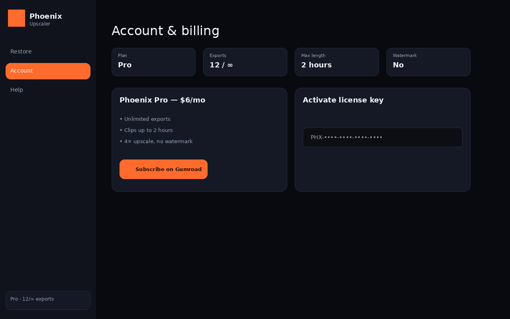

🎬 VHS & tape
Deinterlace and denoise without the waxy, plastic look other tools leave behind.
100% local · Private · Built for VHS & family archives
Phoenix restores VHS, camcorder, and SD footage on your computer — deinterlace, denoise, upscale to HD/4K, stabilize. No uploads. No Hollywood budget.
Palmour Street (public-domain 1957 archive footage) restored with Phoenix Generative Lite and delivered at 1080p.


Public-domain footage from Palmour Street (Prelinger Archives) — Phoenix Generative Lite remaster to 1080p. Process your own family archive clips locally in the app.
The best alternative for home archives — not Hollywood pipelines.
| Topaz Video AI | Adobe / cloud | Phoenix | |
|---|---|---|---|
| Price | ~$299+ or ~$25/mo | CC subscription | $6/mo or $60/yr |
| Privacy | Local | Often cloud | 100% local |
| Best for | Pros & filmmakers | General editing | VHS, tape, SD archives |
| Setup | Complex | Complex | Install → drag & drop |
| Cancel anytime | Varies | Varies | Yes (Gumroad) |
Deinterlace and denoise without the waxy, plastic look other tools leave behind.
Your wedding, your concerts, your kids — they stay on your hard drive.
Drop a file, pick Auto or VHS, download restored video. That's it.
Clean desktop app — no terminal, no cloud dashboard.



One installer. AI models included. Works offline after setup.
Double-click the Setup wizard. Desktop shortcut included.
Download for WindowsAppImage — chmod +x, then double-click.
Download for LinuxOpen the DMG, drag to Applications.
Download for MacFree tier included. Upgrade to Pro anytime from inside the app.
$0
$6 / month
or $60 / year — save $12
License key by email · paste in app → Account
Never. Phoenix runs 100% on your computer. Your files never leave your machine.
For VHS, broadcast SD, and home archive footage — yes. Phoenix is built specifically for that workload at a fraction of the price. Topaz remains the choice for Hollywood-grade pipelines.
MP4, MOV, MKV, AVI, and most common formats from cameras, DVDs, and VHS capture cards.
Subscribe on Gumroad, check your email for a PHX- license key, open Phoenix → Account → paste the key.
A GPU speeds things up, but Phoenix works on everyday laptops too. Processing runs locally either way.